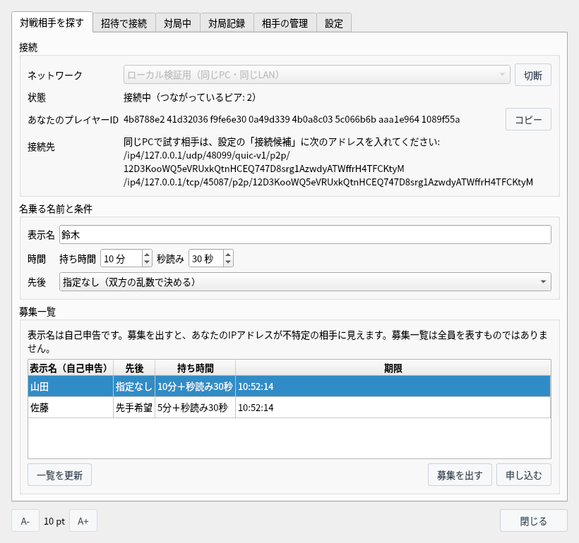

P2P対局（実験版）
対局サーバーを使わずに相手と直接つないで指し、開始と結果に双方が署名した対局記録を手元に残します
試験中の機能です。画面や決まりは今後変わることがあります。
P2P対局とは
将棋盤Q P2P実験版だけにある、試験中の対局の機能です
P2P対局では、CSA通信対局のような対局サーバーを使わず、自分と相手のアプリが直接つながって指します（直接つなげないときは中継を使います）。相手には招待文字列を渡すか、公開の募集一覧から相手を探します。
対局の開始と結果には、このアプリが作るプレイヤー鍵で双方が署名します。プレイヤー鍵の公開鍵が、あなたの「プレイヤーID」です。実名や外部サービスのアカウントは使いません。対局が終わると、双方の署名が付いた対局記録（証跡）が双方の手元に保存され、だれでも検証できます。
P2P対局は、通常の ShogiBoardQ とは別のアプリ「将棋盤Q P2P実験版」（ShogiBoardQ-P2P）に入っています。設定ファイルや記録は通常版と分かれていて混ざりません。ソースからビルドするときに CMake で -DENABLE_P2P_PLAY=ON を付けます（libsodium と Rust が必要です。ビルドの手順はLinux ビルド・リリース手順）。
- 対応OS：今は Linux だけです。通信を受け持つプロセス（shogiboardq-peer）の権限を OS の機能で制限できない環境では使えません。
- ネットワーク：「ローカル検証用（同じPC・同じLAN）」と「限定試験用」の2つです。限定試験用は、協力ノードのアドレスを「設定」の「接続候補」に入れて参加します。
- 使用期限：ビルドした日から180日を過ぎると、限定試験用のネットワークに参加しません。ローカル検証用と、保存した記録の確認・検証は期限後も使えます。
- 自動化 API：
--automationを付けて起動したときは、P2P対局は使えません。
| 項目 | 決まり |
|---|---|
| 手合・対局者 | 平手だけです。人間どうしの対局で、対局中は検討・詰み探索・棋譜解析・定跡の表示を使えません。 |
| 持ち時間 | 持ち時間（分）と秒読み（秒）。消費時間は双方が自己申告し、相手が測った時間と照らし合わせます。 |
| 先後 | 双方の希望が合えば希望どおり、「指定なし」なら双方の乱数で決めます。 |
| 終局 | 投了・詰み・時間切れ・千日手（引き分け）・連続王手の千日手（王手をかけた側の負け）・512手到達（引き分け）・合意による引き分け・合意による中断。 |
| ないもの | 待ったと入玉宣言はありません（入玉は双方の合意で引き分けにできます）。 |
準備
P2P対局のウィンドウを開き、プレイヤー鍵を作ってネットワークに接続します
メニューバーの「対局」から「P2P対局（実験版）…」を選ぶと、P2P対局のウィンドウが開きます。ウィンドウは開いたままでも盤や棋譜を操作できます。

「対局」メニュー：「P2P対局（実験版）…」でウィンドウを開く
「対戦相手を探す」タブで「ネットワーク」を選び、「接続」を押します。初めてのときは「P2P対局の準備」が開きます。下に並ぶ「防げないこと」を読んでから、鍵の保管の方法を選び、「プレイヤー鍵を作る」を押します。
- OSの鍵の保管庫（推奨）：OS の鍵の保管庫（KWallet・GNOME キーリングなど）に保存します。QtKeychain なしでビルドしたときは選べません。
- パスフレーズで暗号化したファイル：パスフレーズから作った鍵で暗号化したファイルに保存します。アプリを起動して最初に接続するときに、パスフレーズを尋ねます。
- 暗号化しないファイル：このPCのファイルを読める人や持ち出した人が、あなたになりすまして対局できます。
鍵のファイルは ~/.local/share/ShogiBoardQ-P2P/p2p/identity に置きます。

初めて接続するときに開く「P2P対局の準備」
接続すると「状態」が「接続中（つながっているピア: N）」になり、「あなたのプレイヤーID」が出ます。「表示名」には相手に見せる名前を入れます。表示名は1〜32文字で、前後に空白を置けません。英数字・記号・かな・漢字・全角英数が使えます。
「持ち時間」「秒読み」「先後」は、招待文字列と募集の条件になります。ローカル検証用で同じPCの別のアプリと試すときは、「接続先」に出るアドレスを相手の「設定」の「接続候補」に入れます。
招待で対局する
知り合いと対局するときは、招待文字列を相手だけに渡します
「招待で接続」タブの「招待文字列を作る」を押すと、招待文字列ができます。「コピー」でコピーして、メッセージなど相手だけに届く方法で渡します。招待文字列にはあなたの接続先（IPアドレス）が入るので、公開の場所に貼らないでください。
招待文字列は10分で使えなくなり、1回だけ使えます。持ち時間と先後は「対戦相手を探す」タブの条件を使います。
招待された側は、受け取った招待文字列を「招待で接続する」の欄に貼り付けて「招待文字列を確かめる」を押します。招待した相手の PeerId・期限・到達候補の数が出るので、確かめてから「接続する」を押します。接続しただけでは対局は始まりません。次に開く条件確認画面で相手を確かめてから始めます。
同じLANの相手の招待文字列には、私設アドレスが入ることがあります。そのアドレスへ接続するときは、「上の私設アドレス（同じLANの相手）へ接続してよい」にチェックを付けます。

「招待で接続」タブ：招待文字列を作る（上）・受け取った招待文字列で接続する（下）
募集から相手を探す
同じネットワークの募集一覧から相手を探すか、自分で募集を出します
接続すると「募集一覧」に、同じネットワークで募集を出している人が並びます。「一覧を更新」で読み直します。表示名・先後・持ち時間・期限を見て募集を選び、「申し込む」を押します。先後の希望が合わない募集には申し込めません。
表示名は自己申告です。募集一覧には見つかった募集だけが並び、全員が出るわけではありません。


「対戦相手を探す」タブ：接続して、募集一覧に募集が並んだところ
「募集を出す」を押すと、「名乗る名前と条件」の表示名・持ち時間・先後で募集を出します。募集の期限は2分で、出している間は30秒ごとに更新されます。やめるときは「募集を取り下げる」を押します。だれかが申し込むと、条件確認画面が開きます。
募集を出すと、あなたの IP アドレスが不特定の相手に見えます。見せたくないときは招待で対局するか、「設定」の「直接接続を使わない」を使ってください（中継の運営者には見えます）。
条件確認画面
対局を始める前に、相手と条件を確かめます
招待で接続したときや、募集に申し込んだとき・申し込まれたときは、双方に「P2P対局の条件の確認」が開きます。「相手」には、相手の表示名（自己申告）とプレイヤーIDが省略せずに出ます。相手が同じ人かどうかは、表示名ではなくプレイヤーIDで確かめます。
| 表示 | 意味 |
|---|---|
| 相手の署名はまだ確かめていません。このIDは相手の申告です。 | 開始の手続きの途中です。プレイヤーIDは、まだ相手が名乗っただけの値です。 |
| 相手の開始署名を確かめました。このIDの鍵の持ち主です。 | 相手がこのIDの鍵で開始に署名しました。 |
| 確認済みの相手です（確認コードで照合済み）。 | 「相手の管理」で確認済みにした相手です。手元で付けた名前も出ます。 |
| 初めての相手です。／この相手との対局: N局 | これまでの対局の数と、そのうち結果が確定しなかった対局の数です。 |
| 「…」と名付けた相手と同じ表示名ですが、プレイヤーIDが違います。 | 赤字で出ます。名前を付けた相手とは別人の可能性があります。 |
「対局の条件と記録」には、先後とその決め方、持ち時間、ルール、対局記録に残るものが出ます。よければ「開始」を押します。双方が「開始」を押すと対局が始まります。「取りやめる」を押すか、60秒以内に双方がそろわなければ取り消されます（残りの秒数が下に出ます）。

条件確認画面（相手の署名を確かめる前）
対局中
メインウィンドウの盤で指し、「対局中」タブで投了や申し出をします
対局が始まると、メインウィンドウの盤・棋譜・対局時計を使います。「対局情報」には双方の表示名と対局IDが入ります。後手のときは、盤が自動で反転して自分の側から見る向きになります。
指した手は、相手のアプリが受け取って確かめてから盤に指されます（その間は「着手の確認を待っています…」と出ます）。待ったはありません。

対局中のメインウィンドウ（14手目まで）
「対局中」タブには、相手・先後・経路（直接か中継か）・手番・切断時間の残りが出ます。
- 投了：自分の手番のときに押せます。
- 引き分けを申し出る・中断を申し出る：相手に承諾するかを尋ねます。相手が承諾したときだけ、合意による引き分け・中断になります。断られたら対局を続けます。
- 対局をやめる（結果未確定）：一方的に対局を離れます。結果は確定せず、相手には中断が伝わります。

「対局中」タブ
回線が切れると、アプリが自動でつなぎ直します（「再接続中（残り N 秒）」と出ます）。切れている間も手番の側の時計は進み、手番の側は1手だけ指せます（つながったときに送ります）。
120秒以内につなぎ直せなければ、対局は「通信中断（結果未確定）」で終わります。1局の切断時間の合計が10分を超えたときも中断になります。自分の回線の障害と相手の意図的な切断は見分けられないので、切断を相手の負けとは扱いません。
アプリや通信プロセスが終了したときと、PC がスリープしたときは、同じ対局には戻れません（結果未確定）。
対局記録と検証
終わった対局の記録（証跡）は双方の手元に残り、だれでも検証できます
終わった対局は「対局記録」タブに並びます。「終わり方」は自分のアプリでの終わり方、「記録の区分」は証跡を検証した結果です。
| 記録の区分 | 意味 |
|---|---|
| 双方の署名あり | 両方のプレイヤー鍵が同じ結果に署名しています。双方が同じ結果に同意したことを示せるのは、この区分だけです。 |
| 棋譜から決まる結果 | 結果への署名はそろっていませんが、双方が署名した最後の局面までの棋譜で、詰み・千日手・連続王手の千日手・512手到達が決まっています。 |
| 結果未確定 | どちらでもありません。投了や時間切れの後に相手の署名が届かなかったときや、中断したときです。 |
証跡は ~/.local/share/ShogiBoardQ-P2P/p2p/evidence に保存されます。対局中にアプリが終了しても、それまでの記録は次に開いたときに「結果未確定」の記録として残ります。

「対局記録」タブ：双方の署名がそろった記録
「検証する」を押すと、署名の一致・棋譜がルールに適合するか・自己申告時間の計算の一致・結果が棋譜から決まるかと、記録の区分が出ます。「証跡を書き出す…」で証跡ファイル（.sbqmatch）を好きな場所に保存できます。「記録を削除」は手元の証跡を消します（戻せません）。
記録は、実際の思考時間・人間が指したこと・対局の日時を証明しません。
証跡ファイルは、GUI を起動せずに shogiboardq-cli の verify-match でも検証できます。結果は JSON で出ます（下の例は読みやすく整え、長い ID を省略しています）。
$ shogiboardq-cli verify-match --input-path ~/game.sbqmatch
{
"black_player_id": "4b8788e2…",
"byoyomi_ms": 30000,
"category": "mutually_signed",
"checks": {
"clock_arithmetic": true,
"conditions_match": true,
"record_legal": true,
"result_conflicts_with_record": false,
"result_refers_to_record": true,
"signatures": true,
"start_signatures": true
},
"game_id": "c62a566e…",
"last_confirmed_ply": 15,
"main_time_ms": 600000,
"network": "sbq-local-1",
"network_id": "83cc9dfd…",
"not_verifiable": [
"actual_thinking_time",
"human_play",
"date_played"
],
"ok": true,
"result": {
"black_signed": true,
"cause": "resign",
"outcome": "black_wins",
"ply": 15,
"result_digest": "a6cec2cd…",
"white_signed": true
},
"states": 16,
"valid": true,
"white_player_id": "8a3569db…"
}valid が true なら署名と記録の形が正しく、category が記録の区分（mutually_signed・determined_by_record・unconfirmed）です。not_verifiable には、この記録からは確かめられないこと（実際の思考時間・人間が指したこと・対局の日時）が並びます。
相手の管理と設定
対局した相手に名前を付け、確認コードで同じ人かを確かめます
対局した相手は、プレイヤーIDごとに「相手の管理」タブに並びます。表示名はだれでも同じものを名乗れるので、同じ人かどうかはプレイヤーIDで確かめます。
- 名前を付ける…：相手に手元で付ける名前です。相手と棋譜には出ず、条件確認画面と対局記録に出ます。
- 確認コード…：双方のプレイヤーIDから作る30桁の数字です。双方に同じ数字が出るので、電話や対面など別の経路で見比べ、一致したら「確認済みにする」を押します。
- ブロック：その相手からの申し込みと接続を断ります。相手には、ほかの相手と交渉中か対局中だと伝わります。
- 記録を削除：その相手の名前・確認済み・ブロック・対局数の記録を消します。
プレイヤー鍵はだれでも無料で作り直せるので、ブロックや過去の成績は作り直しで避けられます。

「相手の管理」タブ：名前を付け、確認コードで確認済みにした相手
- 接続候補：協力ノードのアドレス（/ip4/…/p2p/… の形）を1行に1つ入れます。
- 直接接続を使わない：中継だけを使い、相手から IP アドレスを隠します。中継の運営者には見えます。
- 対局したことのない相手の表示名を出さない：募集一覧・条件確認画面・対局記録で、初めての相手の表示名を「名前は非表示」にします。
- プレイヤー鍵を作り直す…：プレイヤーIDが変わり、相手からは別人に見えます。古い鍵は消します。
下には、プレイヤー鍵の保管の方法、通信プロセスに掛けた権限の制限（Landlock・seccomp など）、このビルドの使用期限が出ます。

「設定」タブ
防げないことと相手に見える情報
実験版のP2P対局を使う前に知っておいてほしいことです
- 表示名：表示名は自己申告です。相手を確かめる根拠はプレイヤーIDと確認コードです。
- 結果への署名：負けた側が結果への署名を拒めば、双方の署名がそろった記録は残りません。
- 消費時間：消費時間は自己申告です。1手あたり10秒までの水増しと、切断を使った時間稼ぎ（1局で合計10分まで）は見分けられません。
- エンジン・示し合わせ：エンジンが指した対局や、示し合わせた対局は見分けられません。双方が示し合わせて架空の結果に署名することもできます。
- プレイヤー鍵：同じ利用者の権限で動く悪意のあるプログラムからは、プレイヤー鍵を守れません。
記録した勝ち数を、公式のレーティングや棋力の根拠にしないでください。
| 見る人 | 見えるもの |
|---|---|
| 対局相手 | IPアドレス（直接つながったとき）・プレイヤーID・表示名・条件 |
| 募集を見た人（不特定） | 募集を出した人の IP アドレス・表示名・条件。申し込みを装えばプレイヤーIDも分かります |
| 対局記録（証跡）を受け取った人 | 双方のプレイヤーID・条件・全手順と自己申告の消費時間・結果と双方の署名。表示名・IPアドレス・手元で付けた名前は残りません |
アプリが対局記録を公開したり、どこかへ送ったりすることはありません。